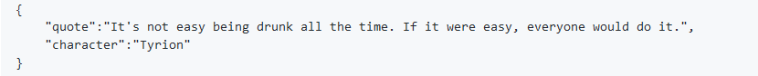

Where is quote from?
ได้ทำการดึง Quote และชื่อตัวละครในหนังเรื่อง Game-of-thrones มาแสดงผลแบบ Random โดยดึงข้อมูลมาจาก ที่นี่

แหล่งที่มาของ API github ของ wsizoo
API คืออะไร ?
API (Application Programming Interface) เป็นช่องทางที่เปิดให้โปรแกรมสามารถสื่อสารระหว่างโปรแกรมอื่น ๆ
ช่วยให้เข้าถึงข้อมูลต่าง ๆ หรือนำข้อมูลต่าง ๆ ออกจากเว็บไซต์ได้
ผู้ที่เขียน API มีหน้าที่เขียน API เพื่อให้คนอื่นเรียกใช้งาน
ส่วนคนที่เรียกขอ API ก็ทำหน้าที่แค่ส่งค่า และรับค่าไปแสดงผลบนหน้าเว็บของตัวเอง